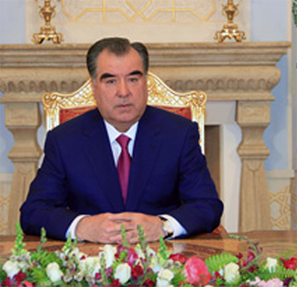
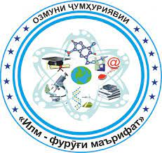

Илм фурӯғи маърифат
Вазорати маориф ва илми Ҷумҳурии Тоҷикистон ба иттилои Шумо мерасонад, ки озмуни ҷумҳуриявии “Илм – фурӯғи маърифат”, ки
бо Амри Президенти Ҷумҳурии Тоҷикистон аз 3 феврали соли 2022, №АП-155 тасдиқ шудааст, баргузор мегардад.
Озмуни мазкур бо мақсади амалисозии “Бистсолаи омӯзиш ва рушди фанҳои табиатшиносӣ, дақиқ ва риёзӣ дар соҳаи илму
маориф” бо иштироки васеи донишҷӯён, магистрантону докторон аз рӯи ихтисос (PhD) ва омӯзгорон гузаронида мешавад.
Аз ин лиҳоз, ҳуҷҷатҳоро тибқи Низомномаи замимагардида то санаи 10.03.2022 ба шӯъбаи илм ва иноватсия пешниҳод намоед.
Замима: Низомномаи озмуни ҷумҳуриявии “Илм – фурӯғи маърифат” (Амри Президенти Ҷумҳурии Тоҷикистон аз 3 феврали соли
2022, №АП-155).

Шартҳои озмун

1. Соли 2023 озмуни ҷумҳуриявии «Илм-фурӯғи маърифат» баргузор карда шавад.
2. Низомнома, ҳайати комиссия ва ҷоизаҳои озмуни ҷумҳуриявии «Илм-фурӯғи маърифат» тасдиқ карда шаванд (замимаҳои 1, 2
ва 3).
3. Академияи миллии илмҳои Тоҷикистон, вазоратҳои маориф ва илм, фарҳанг, саноат ва технологияҳои нав, рушди иқтисод ва
савдо, кишоварзӣ, кумитаҳои телевизион ва радио, кор бо ҷавонон ва варзиш, кор бо занон ва оила, Саридораи геологияи
назди Ҳукумати Ҷумҳурии Тоҷикистон барои дар сатҳи баланд доир гардидани озмуни мазкур чораҳои зарурӣ андешанд.
4. Мақомоти иҷроияи ҳокимияти давлатии Вилояти Мухтори Кӯҳистони Бадахшон, вилоятҳои Суғду Хатлон, шаҳри Душанбе, шаҳру
ноҳияҳо, роҳбарони муассисаҳои илмию таҳқиқотӣ ва муассисаҳои таҳсилоти миёна ва олии касбӣ иҷрои талаботи амри мазкурро
таъмин намуда, барои ҷалби бештари хонандагону донишҷӯён, аспирантону докторантон ва қишрҳои дигари ҷомеа, ки ба омӯзиши
фанҳои риёзӣ, дақиқ ва табиӣ, инчунин ихтироъкориву навоварӣ шавқу рағбат доранд, чораҷӯӣ карда, ғолибонро бо ҷоиза ва
омӯзгорони онҳоро аз ҷиҳати моддӣ ва маънавӣ ҳавасманд гардонанд.
5. Вазорати молияи Ҷумҳурии Тоҷикистон аз ҳисоби маблағҳои фонди захиравии Президенти Ҷумҳурии Тоҷикистон, ки барои соли
2023 пешбинӣ гардидаанд, ба Дастгоҳи иҷроияи Президенти Ҷумҳурии Тоҷикистон ҷиҳати амалӣ кардани чорабинии мазкур 4 085
000 (чор миллиону ҳаштоду панҷ ҳазор) сомонӣ ба таври нақд ҷудо намояд